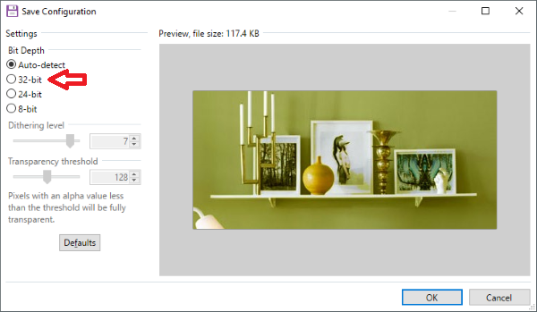
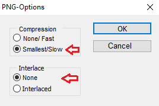
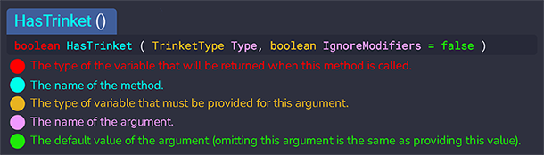

The Binding of Isaac: Repentance Modding FAQ⚓︎
General⚓︎
Do mods disable achievements?⚓︎
Mods do not disable achievements, as long as you have killed Mom (i.e. the boss of Depths II) at least once on the save file. Killing Mom on challenges or daily runs does not count.
How do I install a mod?⚓︎
Simply press the "Subscribe" button on the mod's Steam Workshop page. This will automatically download and install the mod. Just start your game again afterwards, and the mod will be listed in the "Mods" menu in the main menu where it can be activated/deactivated.
Do I need to have all of the DLCs installed to use mods?⚓︎
You must have at least the base game (Rebirth), the first DLC (Afterbirth), and the second DLC (Afterbirth+) installed to use mods.
The third DLC (Repentance) is not required, but it is recommended, as since it adds new modding features, many new mods are not backwards compatible with Afterbirth+.
Do Rebirth / Afterbirth mods work with Afterbirth+ / Repentance?⚓︎
This depends on the mod. However, in most cases, they do not work.
How do I open the debug console?⚓︎
In Afterbirth+, the debug console is enabled as long as you have at least one mod activated.
In Repentance, the debug console is enabled according to the "EnableDebugConsole" setting in the options.ini file. By default, it is set to "0", so if you want to use the debug console, you must change it from "0" to "1". (By default, the options.ini file is located at C:\Users\[username]\Documents\My Games\Binding of Isaac Repentance\options.ini.)
To open the console, press the grave/tilde (~) key while in a run. If you are on a non-English keyboard, see the wiki page on the debug console for more information.
The wiki also has a list of every console command.
How do I get started modding Isaac? (getting started)⚓︎
We generally recommend that people watch the Lytebringr's series of video tutorials on YouTube. These videos were made after the Afterbirth+ DLC was released, but not much has changed now that Repentance DLC is out, so they are still your best bet for learning the ropes.
The main difference is that the location of the mods directory has changed.
Other resources:
- Written tutorials
- Collection of useful tools
- AgentCucco's Video Tutorials (playlist)
- IsaacScript "Green Candle" tutorial
I am trying to make a basic mod and it doesn't work. I am trying to make a character/familiar/enemy and the sprites are invisible.⚓︎
Files must go into specific directories, or they won't work. Note that in Repentance, the location of the mods directory is different from where it was located in Afterbirth+.
Even if you know the right "mods" directory, the files inside of them have to go in really specific places. Thus, you might be not putting your files in exactly the right place. Start by following the Lytebringr video tutorial on YouTube that roughly corresponds to the thing you want to do (e.g. character/familiar/enemy/whatever). Next, don't change anything that he is doing (besides using the right "mods" directory. Once you have verified that your character/familiar/enemy/whatever works in exactly the same way that it does in the video, then start to change things one thing at a time until it breaks. Then, you will see where the problem is, and you can go on to ask a much more specific question, if needed.
Where can I see the code for [some vanilla item] or [some vanilla mechanic]?⚓︎
You can't. The game is programmed in the C++ programming language and the source code is proprietary.
This means that if you want to make a custom item that works in a similar way to a vanilla item, you will have to completely re-implement it yourself from scratch. (You can often use the wiki as an implementation reference.)
This also means that if you want to change the way a vanilla item works, you will often have to re-implement the item from scratch.
Who can I hire/commission to program an Isaac mod for me?⚓︎
Some members of the community can be hired to create mods. For specific recommendations, you can ask in the official Discord server.
Assets⚓︎
Where is the directory/folder for mods located?⚓︎
All mods are located in this location:
1 2 3 4 5 | |
1 2 | |
1 2 | |
How do I unpack the game files? How do I use the resource extractor?⚓︎
By default, the game's resources are located here:
1 | |
However, this directory will be mostly empty unless you run the provided resource extractor. It is located here:
1 | |
Once you run the extractor, the resources directory will fill up with all of the XML files, ANM2 files, images, and other various files that the game uses.
Note that you also have to re-run the resource extractor every time that there is a vanilla patch.
How do I make sprites in the Isaac style?⚓︎
Watch this video by LeatherIceCream who explains the process.
What is the ID of [the sound effect that I care about]?⚓︎
Use this mod, which will tell you what the ID of any currently playing sound effect is.
How do I overwrite vanilla music?⚓︎
- For normal music replacement, you can blow away the respective vanilla resource files.
- For dynamic replacement, use Taz's Music Mod Callback.
What are ANM2 files?⚓︎
- In Isaac, animations are represented by anm2 files in the
resources/gfxfolder. - Each entity in the game has an associated anm2 file.
- Additionally, UI elements are rendered using various anm2 files (in the
resources/gfx/uifolder). - anm2 files are XML files with a different file extension.
- To edit the vanilla animations or add new animations, you can:
- Edit the files directly using a text editor. (Kilburn does this.)
- Edit the files using the provided Isaac Animation Editor, which is located at:
C:\Program Files (x86)\Steam\steamapps\common\The Binding of Isaac Rebirth\tools\IsaacAnimationEditor\IsaacAnimationEditor.exe
How do I edit rooms?⚓︎
The official room editor is provided with the game and is located at:
1 | |
This was the tool that Edmund used to create all of the rooms for Rebirth and Afterbirth. However, the official editor is not very good and does not work properly with any Repentance rooms.
In 2014, Chronometrics made a 3rd party room editor called Basement Renovator to improve upon the official editor. It is open-source and is located on GitHub. Since Basement Renovator is so much better than the official room editor, even the official developers now use Basement Renovator. (This is why none of the Repentance rooms will work in the official editor.)
Basement Renovator is written in Python, so you can either run it from source or download a pre-bundled exe file from the releases page.
Troubleshooting⚓︎
Why is my sprite showing up in-game as a black or red square?⚓︎
This happens when the sprite is saved with the wrong bit depth. Set it at 32-bit depth specifically. (Don't set it to be "Automatic".)


Why is a mod that I subscribed to not visible in the "mods" menu?⚓︎
If mods are not visible in the mods folder even after you subscribed to the mod on the Steam Workshop, it could be caused by the following:
-
You do not own Afterbirth and Afterbirth+. All Steam Workshop mods require those two DLCs to be installed in order for them to work correctly.
-
(Only in Afterbirth+) Your Windows / Mac username contains characters that are not part of the standard English alphabet. Since the game is not able to interpret those correctly, it will not be able to find the mods folder. In order to fix this issue, you have to create a new user on your computer which name only contains English characters.
A mod does not work correctly.⚓︎
- Check if the mod is listed and enabled in the "mods" menu.
- Follow the steps for purging a mod found in this question.
- Check if the log.txt contains any error messages. (By default, the log.txt is located at
C:\Users\james\Documents\My Games\Binding of Isaac Repentance\log.txt.) If you have an error along the lines of... attempt to call a nil value (global 'RegisterMod'), your game files are corrupt and you need to verify the game's integrity (see below). - Disable all other mods you have installed in order to see if they are causing any errors.
- Use Steam to "Verify integrity of game files". For more information, see this guide.
A mod has invisible enemies or other missing content.⚓︎
It is likely that this is due to Steam not downloading all of the mod's files. You can purge the mod by performing the following steps:
- Close the game.
- Unsubscribe from the mod on the Steam Workshop.
- Next, delete the mod directory in the real "mods" directory. (By default, this is located at
C:\Program Files (x86)\Steam\steamapps\common\The Binding of Isaac Rebirth\mods.) - Delete the mod directory in the Steam cached mods directory. (By default, this is located at
C:\Program Files (x86)\Steam\userdata\[Steam ID]\250900\remote. - Open the game.
- Close the game after the intro cutscene begins to play.
- Resubscribe to the mod on the Steam Workshop.
- Open the game again. DO NOT close the game when it seems to not respond anymore.
Why isn't my code working? How do I know when errors occur? Where is the log.txt file located?⚓︎
Lua is an interpreted language, which means that if you make a typo or have otherwise bad code, you will only be able to discover it once the program actually runs. If the Lua interpreters encounters an error, it will write it to the game's log.txt file.
By default, this file is located at:
1 | |
Open this file and search it carefully for Lua-related errors. (Ctrl + f for "error" is a good start.) This will often tell you the line number that you messed up on.
It is also recommended to set FadedConsoleDisplay=1 in the options.ini file so that it is a little bit more easy to discover errors while you play. By default, the options.ini file is located at:
1 | |
For people comfortable with command-line applications, use Zamiel's isaac-log-viewer and have it running on a second monitor as you code & test.
When is the log.txt cleared?⚓︎
Every time that you open the game, all of the contents of the log.txt is deleted. Thus, if you need information from the log after a bug occurs, make sure that you do not re-launch the game.
How do I troubleshoot my code?⚓︎
When you write programs, they may not work right away. Your first reaction should not be to paste a bunch of code into Discord and ask "why doesn't this work?". Doing that means you aren't putting forth very much effort to try and solve the problem on your own.
The tried-and-true method to figure out almost any bug is called "print debugging". In Isaac, this means printing out a bunch of messages to the log.txt file so that you can view it and see which parts of your code are being executed, and which are not. So, go to a bunch of places in your code and add Isaac.DebugString("GETTING HERE 1"), Isaac.DebugString("GETTING HERE 2"), and so on. Then, run your code (i.e. walk around in-game and trigger the bug), and study the log.txt file to try and see what is happening.
Often times, the reason that your code is not working is that your variables are not what you think they are. So, print out what the variables are at each step of the way so that you can confirm that they are what you think they are. Use something along the lines of: Isaac.DebugString("GETTING HERE - FOO IS: " .. tostring(foo))
You might also want to use a log viewer like this one.
I modified an XML file and the game crashes when I open it or when I go into a new run.⚓︎
A crash means that the XML file is invalid, meaning that you messed up somewhere while editing the file. Start over from scratch and make tiny edits one at a time until you find the exact part that crashes the game.
Another helpful troubleshooting tool is validators like xmlvalidation.com.
I enabled a mod and now my game is crashing. How can I fix this?⚓︎
You can try looking through the log.txt file to see if anything interesting is there. However, in the vast majority of cases, the log will not show any helpful information when the game crashes.
Instead, you can find the problem by disabling your mods one by one until you find the exact mod that is causing the crash. Then, you can report it to the developer of the mod, or try to manually fix the code yourself.
Note that whenever you enable or disable a mod, you should completely close and re-open the game (because the game does not load resources properly when you enable/disable a mod via the in-game menu).
My mod is causing the game to crash. How do I figure out which line of code is causing the crash?⚓︎
First, check out the log.txt file for clues as to why the game is crashing. However, in the vast majority of cases, the log will not show any helpful information when the game crashes.
If you are programming your mod in Lua, then your only option is to insert a lot of print statements to try and narrow down where the crash is occurring.
If you are programming your mod in TypeScript using the IsaacScript framework, then you can use this crash debug plugin that will put the exact line that the mod is crashing at in the log.txt, which is extremely handy.
Coding⚓︎
How do I do X? How do I code X?⚓︎
The fastest way to figure out how to do something is to download a few mods that provide similar functionality to what you want to do, and then study the code.
What is a callback?⚓︎
Mods affect the game by putting code inside of callbacks. Each callback fires when a particular event happens in the game. There are 72 different callbacks to choose from, so you have to choose the right one depending on what you want to do.
For example, the most basic callback is MC_POST_GAME_STARTED, which fires once at the beginning of a new run. You would put code in here to do something custom at the beginning of every run.
Another common callback that mods use is MC_POST_UPDATE, which fires on every single update frame (i.e. 30 times per second). You would put code in this callback for custom items that have constant effects.
Go through the ModCallbacks page and read what all of the callbacks do so that you can get familiar with them.
How do I understand the docs?⚓︎

What is Single Line Responsibility (SLR)?⚓︎
When writing code, put some effort into making it look nice and be easy to read for others, especially if you are showing it to other people or asking for help. In this vein, it is a good idea to follow the "single line responsibility" rule - meaning that one line should only do one thing. Read this blog for more details about why SLR is great.
How do I apply a costume to my character?⚓︎
This is called a "null costume" and it is accomplished via the EntityPlayer.AddNullCostume() method. For more information, see Lytebringr's 8th video.
Example code
The follow is an example of a mod adding a null costume:
1 2 3 4 5 6 7 8 9 10 11 12 13 14 15 16 17 18 19 20 21 22 23 24 25 26 27 28 29 | |
How do I make the costume on my custom character persistent?⚓︎
Use Sanio's "Character Costume Protector" library for this, or study the source code and re-implement it yourself.
For a reference implementation, see Andrew the Bunny Knight.
How do I create a new floor/level/stage?⚓︎
Unfortunately, Isaac does not natively support modded custom floors. BudJMT and DeadInfinity have built a custom system called StageAPI that allows mods to add custom floors in a hacky way. However, StageAPI is not easy to use, so unless you are already an experienced Isaac modder & coder, you should stick to more simple projects.
How do I modify the Devil Room / Angel Room chances?⚓︎
There is no built-in way to do this, so you will have to get inventive. For the most control, you can delete all vanilla Devil/Angel doors and completely re-implement the system from scratch. Otherwise, you can temporarily give items to the player such as Goat Head or Rosary Bead, or use things like Game.SetLastDevilRoomStage(), Level.SetRedHeartDamage(), and Level.AddAngelRoomChance(). You also might want to use LevelStateFlags.
How do I get a familiar to follow the player like Brother Bobby does?⚓︎
1 2 3 4 5 6 7 | |
1 2 3 4 5 6 7 | |
How do you use StageAPI to add new bosses?⚓︎
This is an example code snippet from Xalum:
1 2 3 4 5 6 7 8 9 10 11 12 13 14 15 16 17 18 | |
How do I make my custom character start with a smelted / gulped trinket?⚓︎
You cannot do this via editing the XML file. Thus, you must accomplish this via Lua or TypeScript code.
How do I know when a player has picked up a collectible item?⚓︎
There is no vanilla callback for this. As a workaround, you can check EntityPlayer.IsItemQueueEmpty() on every PostUpdate frame, and then check EntityPlayer.QueuedItem when it is not empty. Obviously, this will not work for items that never get queued.
For IsaacScript users, you can use the provided MC_POST_ITEM_PICKUP callback.
If you want to implement this callback yourself, the source code / algorithm is provided here.
How do you tell what the entity type, variant, or subtype of a particular entity is?⚓︎
You can:
- Type "spawn x" into the in-game console. For example, "spawn confessional" would show that the Confessional entity has an identifier of 6.17. This means that it has an entity type of 6 and a variant of 17.
- Or, you can ctrl+f in the "resources-dlc3/entities2.xml" file for the entity you want.
How do I blindfold the player?⚓︎
1 2 3 4 5 6 7 8 9 10 11 12 13 14 15 16 17 18 19 20 21 22 23 24 25 26 27 28 | |
If you are using IsaacScript, then all you have to do is call the setBlindfold function, like so:
1 2 | |
What is the difference between an API and a library?⚓︎
Some mods on the workshop package functionality together as an abstraction for other people to use. In software, this is what is typically known as a "library". As a programmer, it is usually a lot easier to leverage other people's battle-tested libraries than to roll your own from scratch.
On the other hand, an API is short for application programming interface, and it is exactly what it sounds like. An application might want to expose some functionality to external users and software, and it would do that through an explicitly defined interface. Libraries expose an API so that end-users can consume them. But note that any software can have an API, not just a library. For example, the Revelations Mod is a popular mod that adds new floors, bosses, and items to the game. But it also exposes an API so that it can be made compatible with other mods.
Historically, Isaac libraries have labeled themselves as "APIs", but this is a misnomer. Some examples of this include StageAPI and MinimapAPI. On the other hand, an example of a library that is correctly named is Sanio's Character Costume Protector.
If you are creating a new library, please use the correct terminology to name your project, which helps prevent confusion for newcomers to the Isaac modding scene.
What is a micro-optimization? Should I optimize my mod?⚓︎
Definition⚓︎
As programmers, we are often concerned with the speed of our programs.
When beginner programmers start to think about "performance", they often make bad adjustments to their code in the hopes that it will speed it up. These are called micro-optimizations (or premature optimizations). For example, a beginner might start with some code that is neatly organized into separate functions, like this:
1 2 3 4 5 6 7 8 9 10 11 12 13 14 15 | |
In the previous code, we have two functions that are small, named well (theoretically), and are easy to read and understand. But a beginner might be tempted to transform the code to this:
1 2 3 4 5 6 7 | |
The idea here is that since we got rid of two function calls, the program should theoretically speed up. (Because under the hood, what functions do when they are called is put values on the stack, and then pop them back off of the stack when they are done.)
But in reality, compilers can often optimize the code to perform this speed-up automatically (without the programmer having to actually modify their source code). So in this case, the beginner programmer is making their source code worse in exchange for byte-code that will run identically. Bad!
Furthermore, even if the compiler does not optimize the function call automatically, the simple act of calling a function can happen in few short nanoseconds. You would never be able to meaningfully measure a difference in the run-time performance of the program with a few extra function calls. So it's still the same as before: the beginner programmer is making their source code worse for no measurable benefit.
Micro-optimziation is a trap that many beginners fall into. The time spent on performing micro-optimizations should instead be spent on measuring real bottlenecks in the code, and then optimizing those. Or fixing real bugs! Or adding real features!
This is the reason why programmers have the maxim: "Premature optimization is the root of all evil." It comes from Donald Knuth, who is one of the most renown computer scientests of all time. In his paper "Structured Programming with go to Statements", he famously writes:
Programmers waste enormous amounts of time thinking about, or worrying about, the speed of noncritical parts of their programs, and these attempts at efficiency actually have a strong negative impact when debugging and maintenance are considered. We should forget about small efficiencies, say about 97% of the time: premature optimization is the root of all evil. Yet we should not pass up our opportunities in that critical 3%.
Measuring⚓︎
In the example above, the beginner programmer assumed that removing function calls would speed up the program. But these kinds of assumptions could be about any type of code, not just function calls. You might "know" that coding in a certain way will be faster than in another way.
But in real life programs, it is extremely difficult to predict what kinds of code transformations will actually affect the performance of the program. Sometimes, you can make a change that you think will speed up the program, but it really makes it slower! And sometimes, you can make a change that you think will make the program slower, but it really speeds it up! The compiler does all kinds of crazy things under-the-hood.
This is why when we talk about optimization, the most important thing to discuss is measuring. Measuring the run-time of a piece of code is calling profiling. (It can also be called benchmarking.)
Memorize the three rules of optimization from the C2 wiki:
- Don't.
- Don't... yet.
- Profile before optimization.
The idea behind these 3 rules is that in real life programs, you almost never need to optimize. But if you really do, you must measure both before and after. Based on what you measure, it will tell you if the code change is worth the costs of making the code longer, more complicated, or harder to understand. Sometimes, it will be worth it. But often, it won't.
Code Clarity⚓︎
So, if you should not generally be concerned with performance, what should you be concerned with? The answer is code clarity.
First and foremost, the goal of code is to make it neat and easy to read for others. (And even if you are writing code that is never going to be read by anyone else, you should still make it neat and easy to read for future-you, who might have to read this code months or years from now and have to figure out what it does in order to fix some bug.)
You might think it is silly to rank "code clarity" as being more important than having "code that works". And that's certainly debatable. But consider this:
- Code that doesn't work, but is easy to understand, can be modified to be made to work.
- Code that works, but is indecipherable, is going to be very difficult to modify. And this means that we probably can't fix any bugs or add new features.
One of the key insights of Guido van Rossum, the creator of the Python programming language, was that code is read much more often than it is written. Python was designed to be concise, clean, and readable. It had standard ways of doing things and recommends that everyone follow the PEP-8 coding standard. Now, Python is the most popular programming language in the world. The readability of the code isn't the only reason for Python's rise, but it is one of the more important ones.
Lua⚓︎
How do I iterate over a list object from the API?⚓︎
For example, in Lua:
1 2 3 4 5 6 7 | |
In IsaacScript, you could implement the code on the Lua tab in the exact same way. However, for this specific case, you can simply use a helper function to iterate over the rooms directly:
1 2 3 | |
What is the difference between require and include?⚓︎
See the tutorial on using additional Lua files.
What is the difference between pairs and ipairs?⚓︎
pairsis for iterating over Lua tables that represent a map. In other words, something with key/value associations.ipairsis for iterating over Lua tables that represent an array. In other words, something that contains a list of elements.
Code speaks louder than words:
1 2 3 4 5 6 7 8 9 | |
1 2 3 4 5 6 7 8 9 10 | |
Since Lua is untyped and uses tables to represent multiple different data structures, pairs and ipairs serve as a flag to tell the reader what the underlying data structure really is.
What does the colon operator in Lua do?⚓︎
In Lua, you can invoke module functions (i.e. functions that are attached to a table) in two different ways:
1 2 | |
A period invokes the function in the "normal" way. A colon invokes the function in a special way that is syntactic sugar for passing the module as the first argument. For example, the following two function calls are equivalent:
1 2 | |
The point of using the colon is that it is a convenience to save you from typing out the longer function call, at the cost of some obfuscation for those not familiar with Lua. This feature is included in the language since doing this is such a common task. (Lua modules are often used to emulate Java-style classes.)
It is idiomatic in Lua to invoke any function that is part of a module with a colon, and you should follow this convention when writing your own code. Additionally, most API class methods should be invoked with a colon. However, there are exceptions; methods marked as "static", or from object-independant classes (e.g. Isaac, Input, Options), are not invoked with a colon.
1 2 3 4 5 6 7 8 9 10 11 12 13 14 15 16 17 18 19 20 | |
It can be pretty annoying to swap back and forth between using periods and colons. If this part of Lua bothers you, you can try programming mods in TypeScript using the IsaacScript framework. (In TypeScript, you invoke every function with a period, which is consistent and impossible to mess up.)
What does the "[INFO] - [warn] item pool ran out of repicks" message mean in the "log.txt" file?⚓︎
This message means that the game attempted to get a new random collectible type from an item pool, but the item pool was all out of items. When an item pool is depleted like this, the game reverts to getting a random collectible from the Treasure Room pool instead, since that is the default pool. In the case that the Treasure Room pool itself was depleted, then the game will return CollectibleType.COLLECTIBLE_BREAKFAST instead.
If your mod is causing this message, it is likely a sign that you have a problem in your logic somewhere. Perhaps you are spawning a ton of random collectibles by accident, which would subsequently deplete the room's item pool. You might also want to examine the logic in any MC_PRE_GET_COLLECTIBLE or MC_POST_GET_COLLECTIBLE callbacks.
Communication⚓︎
These are some tips on how to improve communication.
Read the Docs⚓︎
A lot of basic questions about Isaac modding can be answered by "reading the manual". In this case, the "manual" is the unofficial community documentation website, created by famous Isaac modder Wofsauge. (The community documentation website is much better than the "normal" documentation that comes included with the game, which is incomplete, hard to search, and buggy.)
In fact, the website you are on right now is the community docs. Welcome! Use the search bar in the top right hand corner to easily look up the information you need. For example, if you wanted to know how to get the soul hearts of a player, you could search for "soul hearts", and then you would find the EntityPlayer.GetSoulHearts method.
Now that you know about the docs, please remember to search the docs before asking a question in the Isaac community Discord server. By asking questions that can be easily answered by searching the docs, it is not being very respectful to the volunteers who spend their time answering questions.
Use Discord Syntax Highlighting⚓︎
When pasting code into Discord, make sure to paste it in a "code block" by using triple backticks. And make sure to use syntax highlighting for the language, by typing the name of the language next to the backticks.
1 2 3 4 | |
1 2 3 4 | |
Format Code⚓︎
When asking for help, it is common to post a code-snippet. Before posting code, please format it with an auto-formatter so that it can be easily understood by others.
- In Lua, use Lua Beautifier, LuaFormatter, or lua-fmt.
- In TypeScript, use Prettier.
Avoid Posting Screenshots⚓︎
When asking for help, it is common to post a screenshot of your code. Don't do this, because it isn't editable, or copy-pasteable, or searchable. Instead, post the actual text of the code. Also see the section on Discord syntax highlighting.
Use Minimal, Reproducible Examples⚓︎
When asking for help, it is common to post a bunch of code that is unrelated to the problem. This makes questions hard to understand and usually means that the person asking the question is putting forth very little effort.
Please read this StackOverflow post on how to create minimal, reproducible examples.
Avoid Using Link Previews⚓︎
Link previews can clutter the conversion, turning a tiny message into a massive wall of text. It is courteous to enclose all links in <>, which will disable the feature.
For example:
1 | |